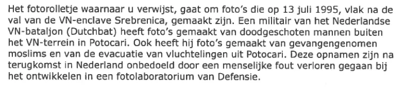

Prueba · Carta
Ministerio de Defensa, resolución Wob sobre el rollo de película, 2 de agosto de 2021
El pasaje
«Tras el regreso a los Países Bajos, estas imágenes se perdieron de forma involuntaria por un error humano durante el revelado en un laboratorio fotográfico de Defensa». Página 1, la frase final del tercer párrafo. Traducido del neerlandés; el texto original figura a continuación.
Texto original
“Deze opnamen zijn na terugkomst in Nederland onbedoeld door een menselijke fout verloren gegaan bij het ontwikkelen in een fotolaboratorium van Defensie.” Las líneas de la imagen escaneada se han unido aquí.

Por qué importa este documento
En esta resolución del 2 de agosto de 2021, el Ministerio de Defensa escribe que las fotos que un militar del Dutchbat tomó cerca de Potočari el 13 de julio de 1995 «se perdieron» durante el revelado. El 13 de julio de 2021, Giltay había solicitado documentos sobre una presunta orden de destrucción del rollo de película y sobre su ejecución por un empleado del Real Ejército de Tierra neerlandés. El ministerio responde que no se han encontrado tales documentos y desestima la solicitud. La resolución remite al informe del NIOD (Instituto de Estudios sobre la Guerra, el Holocausto y el Genocidio) de 2002, que consideraba improbable una destrucción intencionada, y a la investigación parlamentaria. Con ello, Defensa reitera en 2021 su versión de que las imágenes ya no existen. Nunca se han hecho públicas.
Procedencia
- Documento
- Resolución sobre una solicitud presentada al amparo de la Wet openbaarheid van bestuur (Wob), la antigua Ley de Publicidad de la Administración
- Remitente
- Ministerio de Defensa, Administración central (Bestuursstaf), Dirección de Comunicación, La Haya
- Destinatario
- Giltay; el propio Ministerio de Defensa tachó el nombre y la dirección en el ejemplar que envió por correo electrónico
- Fecha
- 2 de agosto de 2021, sellada
- Referencia
- BS2021016742
- Asunto
- «Besluit op uw Wob-verzoek» (resolución sobre su solicitud Wob)
- Referencias
- La solicitud Wob de Giltay del 13 de julio de 2021; una resolución del 16 de septiembre de 2019 sobre una solicitud anterior; el informe del NIOD Srebrenica, een ‘veilig’ gebied (Srebrenica, una zona «segura») de 2002 y el informe Missie zonder vrede (Misión sin paz) de la Comisión Parlamentaria de Investigación sobre Srebrenica
- Firmado
- En nombre de la ministra de Defensa, el secretario general adjunto, mr. M. Gazenbeek; la firma misma está tachada en la imagen escaneada
- Delegación de firma
- La resolución se considera resolución de la ministra de Defensa, Ank Bijleveld-Schouten, que es responsable de ella
- Tachado
- El nombre y la dirección del destinatario, el nombre del saludo, el número de teléfono y la dirección de correo electrónico de la persona de contacto, y la firma
- Idioma
- Neerlandés
- Páginas
- 2
- Véase también
- Informe del NIOD sobre Srebrenica, 2002Informe de la Comisión Parlamentaria de Investigación sobre Srebrenica, 27 de enero de 2003
Citado en: el ensayo «La prohibición cayó, el libro quedó en pie» en el capítulo (7) «Ninguna respuesta sobre el fondo» y en las diapositivas «Agfa · 2001» y «Hasta la fecha» de la presentación «La historia en el mapa».
Ficha de prueba: https://
Documento: https://
Modificado por última vez el 10 de octubre de 2026, consultado el 27 de noviembre de 2026.

Esta página es una ficha de prueba del libro El general del encubrimiento de Edwin Giltay y del sitio web que lo acompaña.